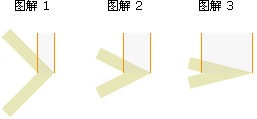
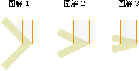

HTML 5 canvas miterLimit 属性
实例
以最大斜接长度 5 绘制线条：
JavaScript:
var c=document.getElementById("myCanvas");
var ctx=c.getContext("2d");
ctx.lineWidth=10;
ctx.lineJoin="miter";
ctx.miterLimit=5;
ctx.moveTo(20,20);
ctx.lineTo(50,27);
ctx.lineTo(20,34);
ctx.stroke();
定义和用法
miterLimit 属性设置或返回最大斜接长度。
斜接长度指的是在两条线交汇处内角和外角之间的距离。
提示：只有当 lineJoin 属性为 "miter" 时，miterLimit 才有效。
边角的角度越小，斜接长度就会越大。
为了避免斜接长度过长，我们可以使用 miterLimit 属性。
如果斜接长度超过 miterLimit 的值，边角会以 lineJoin 的 "bevel" 类型来显示（图解 3）：
| 默认值： | 10 |
|---|---|
| JavaScript 语法： | context.miterLimit=number; |
属性值
| 值 | 描述 |
|---|---|
| number |
正数。规定最大斜接长度。 如果斜接长度超过 miterLimit 的值，边角会以 lineJoin 的 "bevel" 类型来显示。 |